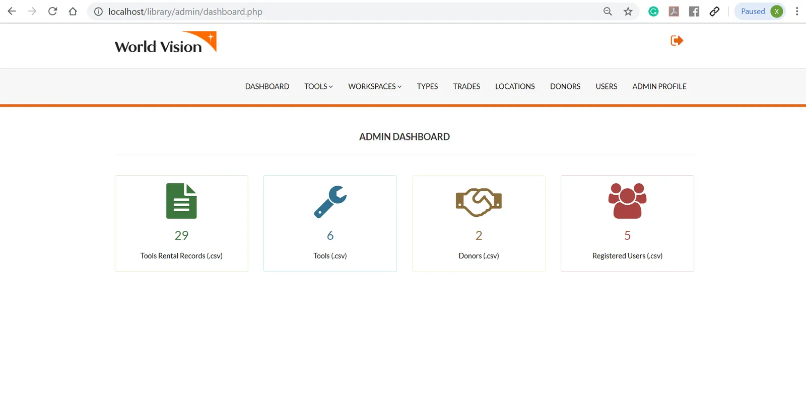

Full-stack system · Non-profit
Tools Inventory Management System
A web system built for a community in Rwanda to manage donated trade tools and workspaces — online tool sign-out and return, workspace reservations, tool holds, late-fee tracking and custom report generation.
My role in the team
I was responsible for the full development lifecycle within an Agile team: requirements gathering, design, coding, testing, documentation and implementation.
Walkthrough

Built with
- PHP
- phpMyAdmin (MySQL)
- JavaScript & jQuery
- HTML / CSS
- Bootstrap